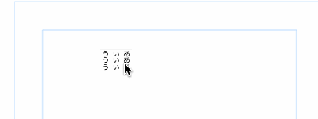

Namenote v0.9.3 (2018/9/5)
win版
mac版
README
* インストール
インストーラとかは用意していません。
どこか適当な場所に解凍したフォルダをコピーして下さい。
【Windowsの場合】
・win.zipを解凍したフォルダ（Namenote-win32-ia32）の中にある実行ファイル（Namenote.exe）をダブルクリックして起動して下さい。
【Macの場合】
・mac.zipを解凍したフォルダ（Namenote-darwin-x64）の中にある実行ファイル（Namenote）をダブルクリックして起動して下さい。
ダブルクリックで起動しない場合は（OSのバージョンにもよるのですが）右クリックしてメニューから何かすればだいたい起動できると思います。
フォルダの解凍には時間がかかりますが、気長にお待ちください。
更新する時は、前のバージョンを削除するか、別の場所に解凍してください。
古いバージョンのフォルダに上書きしても、うまくいかないことがあります。
--------------------------------------------------------------------------------
* 使用方法
【基本的な操作】
左上端のファイルアイコンから、[新規...]でノートを新規作成します。
フォーカスのあるページは青い枠で囲って表示されますが、どのページでも好きなときに描画できます。
スペースを押すと、フォーカスのあるページが拡大されます。
もう一回スペースを押すと、元のサイズに戻ります。
スペースキーはペン先が動いてると反応しないことがあるので（すみません）、ペンをタブレットからちょっと離すといいです。
【テキスト】
テキストを追加する時は、画面をctrl+クリックして下さい。
テキストの編集をやめたい時は、画面の何もないところをクリックするか、ctr+Gを押して下さい。
ctrl+,(カンマ)とctrl+.（ピリオド)で、文字を拡大・縮小できます。
【縦書き入力について】
使用している日本語入力の種類によっては、推測候補のウィンドウが文字の上に表示されてうまく入力できないことがあります。これを簡単に直す方法はありません。
日本語入力の設定で推測候補のウィンドウを表示しないようにするか、ctrl+]を押して一時的に横書きにして入力して下さい。もう一度ctrl+]を押すと縦書きに戻ります。
【自動保存】
変更は最長10秒ぐらいで自動保存されるので、保存コマンドはありません。
作業を中断する時は、画面左下に表示される青い「ファイル保存中」のマークが消えるのを待ってから、アプリケーションを終了して下さい。
【ノートの管理について】
ノートを新規作成すると、ノート名と同じ名前のフォルダが指定した場所に作られます。フォルダの中にある0.namenoteが管理ファイルで、それ以外は各ページのデータです。
保存したノートを開く時は、左上端のファイルアイコンから、[開く...]で、そのノートのフォルダの0.namenoteを選択して下さい。
途中の状態を残したい時は、フォルダを適当な名前で別の場所にコピーして下さい。
ノートが要らなくなったら、フォルダごとゴミ箱に捨てて下さい。
【ページバッファ】
右上端の三本線のアイコンから、[ページ]->[追加](またはshift+I)でページの追加、
[ページ]->[バッファに入れる](またはshift+K)でページの削除です。
複数のページをまとめて移動したい時は、[バッファに入れる]を連続して行った後、挿入したい位置にフォーカスを移動して、[ページ]->[バッファから戻す](またはshift+Y)を実行して下さい。
ページ操作のやり直しはまだできませんので、慎重に……。
--------------------------------------------------------------------------------
* 既知の問題点など
・アンドゥが機能がまだ一部のコマンドにしか入っていません。
・縮小表示したとき、画質が荒くて細い線がかすれてしまいます。
・描いた画像の編集機能（回転、ほかのページへの移動など）がありません。
* Windowsの筆圧について
Windowsでは筆圧の取得にデジタルインク機能を使っているのですが、他のアプリで問題が出るため、普段デジタルインクをオフにして使っている方が多いと思います。
ワコムのタブレットであれば、アプリケーションごとにデジタルインクのオンオフが設定できますので、「ワコムタブレットのプロパティ」でNamenoteの時だけ「デジタルインク機能を使う」ように設定すれば、筆圧が使えるようになります。
履歴
* ver0.9.3 (2018/9/5)
・消しゴムツールが動かなくなっていたのを修正しました。申し訳ありません。
・だんだん重くなって反応しなくなる問題を（一部）修正しました。
* ver0.9.2 (2018/7/31)
・筆圧調整のダイアログを追加しました。
* ver0.9.1 (2018/6/30)
・Windowsでメニューバーが動作しない問題ですが、どうやっても直せないのでとりあえず
ツールバーの両端にボタンを追加して、ボタンから自作のメニューを開くようにしました。
Altキーで従来のメニューバーを表示することもできます。
* ver0.9.0 (2018/5/10)
・CSNFの書き出しは、表記を修正しました。デフォルトは
商業誌用 (B4サイズ原稿用紙/A4仕上がり/B5印刷)
同人誌用 (A4サイズ原稿用紙/B4仕上がり/A5印刷)に縮小
の2種類です。デフォルト以外の縮小率も指定できるようになりました。
・セリフの途中で2回改行すると、セリフを分割することができるようになりました。
・分割したセリフを結合する時は、複数のセリフを選択してctrl+eです。
・ctrl+ドラッグで複数のセリフを矩形選択することができるようになりました。

* ver0.8.0 (2017/12/08)
・CSNFの書き出しに、書き出すページ範囲とスケール（B4->A4に縮小）の指定を追加。
・テキストの色を選べるようになりました。
・小さいテキストを編集するときは、拡大して表示する機能のテスト。
・描画中にペン先を止めると、直線ツールに切り替わるようになりました。
切り替わるのが早すぎる場合は、[Namenote]->[環境設定]で設定してください。
・ショートカットの一覧を__SHORTCUT__.txtに書きました。
・[ノート]->[スナップショットを保存]でノートのコピーを他の場所に保存できるようになりました。
・一覧表示で描いた時に解像度不足で線がカクカクになってしまう問題を**ちょっとだけ**改善しました。
* ver0.7.8 (2017/12/01)
・過去に試用版をダウンロードした方の試用期限を2017/12末まで延長しました。
・ペンのアンドゥでストロークがきれいに消えずにゴミが残る問題を修正しました。
・windowsでzipファイルを解凍した時にエラーが出る問題を修正しました。
* ver0.7 (2017/11/22)
・鉛筆や消しゴムツールでサイズが変更できるようになりました。
左上のツールボタンを2回押すと、ツールオプションが表示されます。
・手のひらツールが使えるようになりました。
スペースを押しながら、ドラッグしてください。
・Windowsで筆圧が使えるようになりました。
・「左右反転して表示」コマンドを削除しました。
作り直しです。
* ver0.6 (2017/11/13)
ショートカット
* よく使うもの（それぞれ左手用、右手用、テンキー用があります）
undo: 'command+z', 'ctrl+z', 'num/', ',', 'z'
取り消し
redo: 'command+y', 'ctrl+y', 'num*', '.', 'x'
やり直し
zoom: '[', 'q', 'numplus'
拡大
unzoom: ']', 'a', 'numminus'
縮小
toggleTool: 'x', 'num.', '/'
鉛筆<->消しゴムの切り替え
--------------------------------------------------------------------------------
* ノート
pen: 'p'
ペン
eraser: 'e'
消しゴム
text: 't'
テキストツール
openNewDialog: 'command+n', 'alt+n'
新規
open: 'command+o', 'alt+o'
開く
openRecent: 'command+1',
最後に使用したノートを開く
snapshot: 'command+s',
スナップショットを保存
close: 'command+w', 'alt+w'
閉じる
quit: 'command+q', 'alt+q'
Namenoteを終了
exportCSNFDialog: 'command+p', 'alt+p'
csnf書き出し
exportPDFDialog: 'command+shift+p', 'alt+shift+p'
pdf書き出し
--------------------------------------------------------------------------------
* ページ操作
savePageImage: 'command+-', 'alt+-'
イメージを保存
extractText: 'command+t', 'alt+t'
テキストの抽出
insertPage: 'shift+i'
ページの追加
appendPage: 'shift+a'
ページの追加（カレントページの後ろに追加）
duplicatePage: 'shift+d'
ページの複製
cutPage: 'shift+k'
バッファに入れる
pastePage: 'shift+y'
バッファから戻す
emptyPage: 'shift+0'
バッファを空にする
movePageLeft: '<'
前に移動
movePageRight: '>'
後ろに移動
--------------------------------------------------------------------------------
* 表示
row1: 'shift+1'
1行あたり2ページ表示
row2: 'shift+2'
1行あたり4ページ表示
row3: 'shift+3'
1行あたり6ページ表示
row4: 'shift+4'
1行あたり8ページ表示
showMargin: 'r'
余白の表示
fullScreen: 'command+ctrl+f'
フルスクリーン
developerTools: 'command+alt+j'
デベロッパーツール
--------------------------------------------------------------------------------
* テキスト (テキスト入力中でも使えます)
toggleEditMode: 'ctrl+g'
入力モードの切り替え
addFontSize: 'ctrl+.'
フォントの拡大
subtractFontSize: 'ctrl+,'
フォントの縮小
toggleDirection: 'ctrl+]'
縦書き・横書き切り替え
不具合などありましたら、こちらまでお願いします。
フニゲ
mail: funigedev@gmail.com
twitter: https://twitter.com/funige